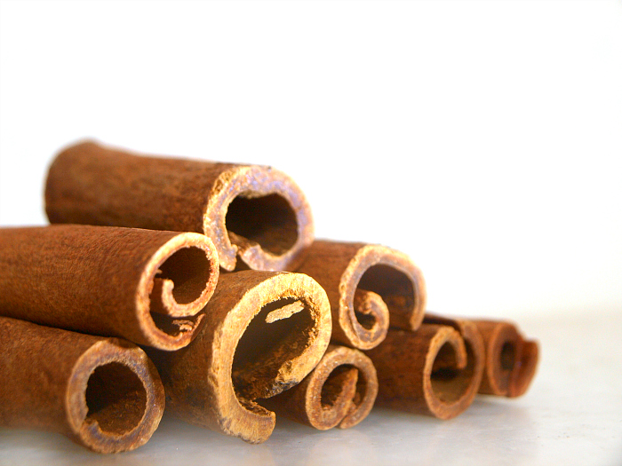

III · The roasting ritual
Every pot starts with whole spices.
Bought whole. Roasted, ground and mixed in-house.
The masala behind every Hameediyah curry still starts as whole spices. VERIFY Drag a spice into the kuali and roast it slowly.
“We still buy whole spices, mix, roast and grind them ourselves.”Abdul Sukkor Syed Ibrahim, seventh generation, New Straits Times, 20 Aug 2019Meet the four signatures
Skip the ritual
State 3 · Roasting
Toasting… keep going.
RawToastedRoasted
Cuminjintan putih
Fenneljintan manis
Cardamombuah pelaga
Clovebunga cengkih
Cinnamonkayu manis
Corianderketumbar
Star anisebunga lawang
Chillicili kering
4 of 8 in the kuali.
